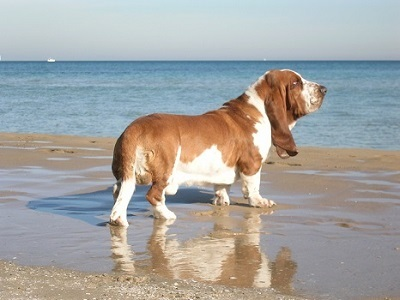

Inteligencija
Ljubitelji pasa najviše cijene pse zbog njihove inteligencije, a događaji u kojima pas učestvuje i snalazi se u životu i pokazuju da su oni visoko inteligentne životinje. Ipak, da li se može govoriti o inteligenciji kod psa? Pas ne može da misli kao čovjek niti da stvara kao čovjek. Ali sa druge strane pas raspoznaje vrijeme i prostor i ima moć pamćenja. Instikti koje posjeduje pas se mogu modifikovati i usmjeravati. Zbog svega pas uči, pa možemo govoriti o specifičnoj vrsti pameti. Pas je poslušan, povezuje slike, zvukove i mirise (kada vidi povodac, zna da ide u šetnju i tome se raduje). Inteligencija se kod pasa pojavljuje kao mješavina nagona, nasljeđa i obuke. Pas ne uči zato što razumije, već zato što obukom stiče pojedine reflekse, pamti ih i kombinuje. Detaljniji podaci o inteligenciji psa se nalaze na stranici pseća inteligencija
Ponašanje
Psi su društvene životinje, ali karakter i ponašanje može da varira od rase do rase, kao i u zavisnosti od toga kako se vlasnici i ostali koji dođu u kontakt, ponašaju sa psom. Fizičko zlostavljanje, kao i izgladnjivanje, može prouzrokovati veoma neurotičnu i opasnu životinju. Čak i nedovoljno socijalizovani psi se mogu ponašati agresivno i nepredvidivo. Psi mogu napasti i čovjeka kao i druge životinje, ali se ovo dešava isključivo zbog pogrešnog odnosa prema životinji u prošlosti. Zanimljivo je da će pas koji je jednom zlostavljan od strane čoveka, tog čoveka i te kako dobro zapamtiti i već sledećom prilikom će ga napasti, naizgled bez ikakvog razloga, ma koliko vremena prošlo od zlostavljanja.
Fizičke karakteristike
Današnje rase pasa pokazuju sve više varijacija u veličini, izgledu i ponašanju no bilo koja druga domaća životinja. Bez obzira na veliki raspon razlika u nekim osobinama, nastalih selektivnim odgojem, svi psi dijele iste pretke, pa samim tim i neke osnovne osobine svojih predaka. Psi su predatori i strvinari, posjeduju oštre zube i snažnu vilicu za napadanje, držanje i trganje hrane. Kao i ostali sisari predatori, i psi imaju snažne mišiće i razvijen kardiovaskularni sistem koji podržava trčanje i omogućuje izdržljivost. Poredeći strukturu kostiju pasa sa čovjekovim stopalom, psi tehnički hodaju na svojim prstima.
Njuh
Naizraženije čulo kod pasa je čulo mirisa, odnosno njuh. Mnogo je razvijenije nego kod čovjeka i omogućava psu da na znatnoj udaljenosti razlikuje stvari i bića ponaosob, razlikujući, pri tome, njihove mirise. Čulo mirisa određuje šta je jestivo i koja je i kolika teritorija jednog psa. Koliko je ovo čulo izoštrenije od ljudskog, kaže i podatak da čovjek ima oko 5 miliona etmoidalnih ćelija u nosu, labrador 120, foks terijer 147, a njemački ovčar 200 miliona ćelija putem kojih prima mirise iz okoline. Zato pas može da razlikuje bar 10 puta više različitih mirisa od čovjeka. Osim samih ćelija u nosu, i veliki dio mozga je posvećen interpretaciji mirisa, a kao i kod svih sisara, i u mozgu pasa postoji centar za miris. Ovaj centar prima i registuje nadražaje nervnim putem. Njuh je takođe i značajno oruđe u komunikaciji, i moguće je prikupiti ciji niz različitih tipova podataka o drugim psima samo uz pomoć pažljive analize mirisa. Takođe, na osnovu mirisa, pas postaje seksualno nadražen (pas lako nanjuši kuju u tjeranju), a kako je održanje vrste najbitnija stvar svake jedinke i nos postaje jedan od najbitnijih organa u psećem organizmu. Dresurom i uzgojem, čovjek je dalje povećavao sposobnost psa da prepozna mirise. Posebno izvježbane životinje se koriste za pronalaženje krijumčarene robe kao što je droga, ali i za pronalaženje unesrećene osobe i 10 metara ispod snijega. Najbolji njuh, svakako imaju lovački psi, goniči iz grupe krvosljednika.
Sluh
Sluh je najbolje čulo kod psa poslije njuha. Kada je na oprezu, pas načuli uši i pomoću mišića (kojih, vezane za uši, ima duplo više nego čovjek) poveća površinu ušnih školjki. Sluh mu je selektivan, što znači da može izolovati određene zvukove, a druge isključiti. Pas reaguje na određene promjene u intonaciji glasa i na taj način veoma dobro razlikuje komandu od grdnje i pohvale. Uz to pamti i veliki broj riječi i tako uči da sluša i sarađuje sa čovjekom. Psi detektuju niskofrekventne zvukove, čak frekvencije od 16 -{Hz}-, pa do 100 kHz (maksimalni dijapazon kod ljudi od 20 -{Hz}- do 20 kHz), i uz veliku pokretljivost ušiju vrlo brzo mogu da odrede lokaciju izvora zvuka.
Vid
Za pse možemo reći da su daltonisti. Nova istraživanja ukazuju da psi, ipak, mogu da razaznaju neke boje, ali ne na način na koji to mogu ljudi. Takođe se ukazuje na činjenicu da psi mogu da razlikuju varijetete ljubičaste/purpurne boje i nijanse žute boje. Kako su pseća sočiva ravnija od ljudskih, nemoguće je da psi vide detalje, ali sa druge strane, pseće oči su osjetljivije na svjetlo i pokrete. Neke rase, imaju vidno polje čak i do 270° (u odnosu na ljudskih 180° )